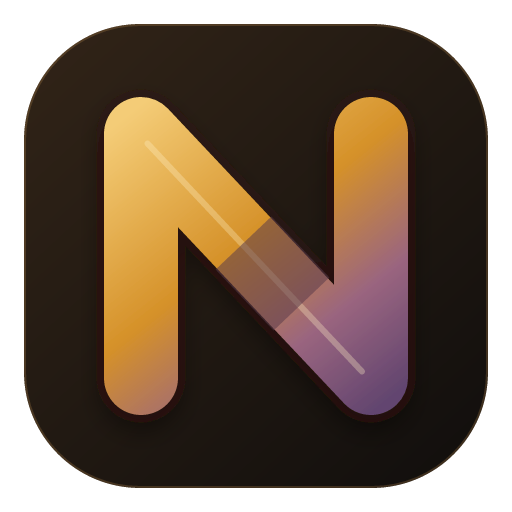

Local-first
Notes live as files on your disk. Nothing leaves the device unless you point it somewhere.
Storagenotes/note-4f1c.nevo
NevoNevo is a free, open-source notes app for Windows, macOS, Linux and Android. Every note is a plain file in a folder you choose — no account, no cloud, no sync server.
Notes live as files on your disk. Nothing leaves the device unless you point it somewhere.
Storagenotes/note-4f1c.nevoA WYSIWYG editor with slash commands and formatting that follows your keystrokes.
Editornotes/note-9a07.nevoLink notes with [[double brackets]] and see the connections in the graph.
Linksnotes/note-b2e8.nevoKaTeX formulas like eiπ + 1 = 0, Mermaid diagrams and freehand sketches right in the note.
Blocksnotes/note-c41d.nevoKanban boards and tables with formulas, stored in the same notes.
Structurenotes/note-d5f0.nevoA local Ollama model by default, or any OpenAI-compatible endpoint you choose. Privacy mode blocks everything non-local.
AInotes/note-e6a3.nevoWrite in a calm editor. Markdown formats as you type.· scroll to switch views
A workspace is an ordinary folder. Each note is a readable JSON file, so you can back it up, version it with Git, or move it anywhere — Nevo never locks it away.
{
"id": "4f1c…",
"title": "Local-first",
"updatedAt": "2026-10-19T09:12:00Z",
"properties": { "tags": ["principle"] },
"content": {
"type": "doc",
"content": [ /* your paragraphs, tables, formulas… */ ]
}
}Free and open source under AGPL-3.0. One app for desktop and Android.
Latest release: see GitHub · All releases